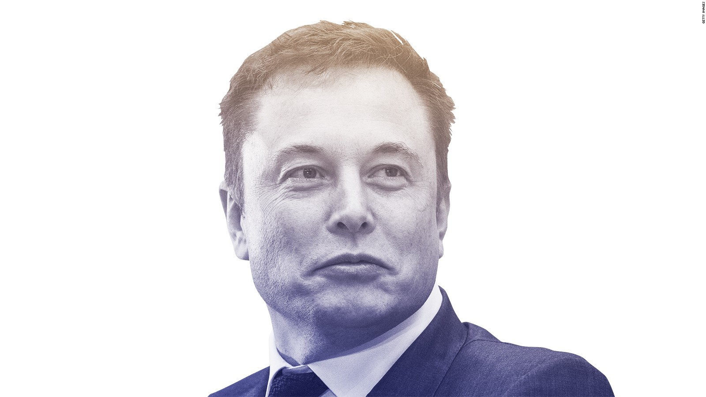

Elon Musk Kimdir?
Elon Musk (d. 28 Haziran 1971) Güney Afrika ve Kanada asıllı, Güney Afrikalı, Kanadalı, ve Amerikalı mühendis, mucit, yatırımcı ve girişimci. SpaceX’in kurucusu ve Tesla Motors ile PayPal’ın (orijinali X.com) kurucu ortaklarındandır. SpaceX’te CEO ve baş tasarımcı; Tesla Motors’da başkan, CEO ve ürün mimarı olarak görev yapmaktadır. Musk aynı zamanda SolarCity’nin de başkanıdır. Queen's Üniversitesi’nden ayrıldıktan sonra, Pennsylvania Üniversitesi Wharton Okulu’nda ekonomi alanında, Pennsylvania Üniversitesi, Bilim ve Sanat Okulu’nda fizik alanında lisans eğitimlerine devam etti
Çocukluğu ve Gençliği
Musk, Güney Afrika'nın başkenti Pretoria’da Kanadalı bir anne (kızlık soyadı; Haldeman) ve Güney Afrikalı bir babanın (Errol Musk) oğlu olarak doğdu. Elon kendi kendine yazılım programlayıp kodlamayı öğrendi. 12 yaşındayken kendi yazdığı Blastar adındaki uzay oyununu yaklaşık $500’a satarak ilk yazılım satışını yaptı. Bryanston High School’da sekizinci ve dokuzuncu sınıfları geçtikten sonra Musk, Pretoria Boys High School’a geçip oradan mezun oldu. 1988 yılında henüz 17 yaşındayken Güney Afrika ordusunda askerlik yapmamak için evinden ayrıldı: “Askerlik yapmakla ilgili bir sorunum yok, ancak Güney Afrika ordusunda askerlik yapıp siyahi insanları bastırmaya çalışmak bana vakit geçirmek için iyi bir yol gibi görünmedi.” ABD’ye taşınmak istiyor ve şöyle diyordu: "Orası muhteşem şeylerin mümkün olduğu yer. 1992 yılında, Kingston, Ontario’daki Queen's Üniversitesi’nde iki yıl geçirdikten sonra, Pennsylvania Üniversitesi’nde işletme ve fizik okumak için Kanada’dan ayrlıdı. The Wharton School of the University of Pennsylvania’da anadalını seçip, Ekonomi alanında lisans diploması aldı. Ayrıca University of Pennsylvania, School of Arts and Sciences’dan da, Fizik alanında yan dal diploması aldı. Daha sonra Uygulamalı Fizik ve Malzeme Bilimi alanında doktora yapmak için Kaliforniya’nın Silikon Vadisi bölgesine taşındı. Ancak doktorayı tamamlamadı. Lisans eğitimleri ve Thomas Edison, Nikola Tesla, Bill Gates, Steve Jobs, Walt Disney gibi yenilikçilerden aldığı ilhamla, Musk girmek istediği, “insanlığın geleceğini en çok etkileyecek sorunlardan oluşan” üç alan tespit etti. Bu alanlar internet, temiz enerji ve uzaydı.
Kariyeri
Musk 1995’de Stanford’da uygulamalı fizik ve malzeme bilimi alanında doktoraya başladı. Ancak iki gün sonra kardeşi Kimbal Musk’la beraber yeni organizasyonlar için bir çevrimiçi içerik yayınlama yazılımı olan Zip2 projesine başlamak için okulu bıraktı. 1999’da, Compaq'ın AltaVista birimi Zip2’yu 307 milyon dolar nakit ve 34 milyon dolarlık hisse senedi vererek satın aldı.
Yaptığı Hayır işleri
Musk’ın başkanı olduğu Musk Foundation (tr: Musk Vakfı), bilim eğitimi, çocuk sağlığı ve temiz enerji üzerine hayır işlerine yoğunlaşmış durumdadır. Musk aynı zamanda yenilenebilir enerjiyi teşvik eden X Prize Foundation’da da mütevellidir. Diğer kar amacı gütmeyen kuruluşlardan olan Space Foundation (tr: Uzay Vakfı), National Academies Aeronautics and Space Engineering (tr:Milli Havacılık ve Uzay Mühendisliği Akademileri), Planetary Society (tr:Gezegenler Derneği), ve Stanford Engineering Advisory Board (tr:Stanford Mühendislik Danışmanlık Komisyonu) yönetim kurullarının da üyesidir. Ayrıca Musk California Institute of Technology’nin de mütevelli heyetinin üyesidir. 2010 yılında kendi vakfı aracılığıyla afet bölgelerindeki kritik ihiyaçları karşılamak adına güneş enerji sistemlerine bağış yapmak için milyon dolarlık bir program başlattı. Buna örnek olacak ilk güneş enerji sistemi bağışı devlet ve federal yardımlar tarafından görmezden gelinen Alabama’daki kasırga müdahale merkezine yapıldı. Bu işin Musk’ın ticari amaçlarıyla bir ilgisi olmadığı açıkça göstermek için, SolarCity Alabama bölgesiyle ilgili şimdiki veya gelecek zamana dair herhangi bir planlarının bulunmadığını açıkladı. Musk’ın 2001 yılında Mars’ta küçük bir sera kurup bitki yetiştirmek amaçlı “Mars Vahası” adlı planları vardı. Ancak insanlığın uzayda dolaşabilmesini engelleyen sorunun roket teknolojisinin gelişmemesinden kaynaklandığı sonucuna vardığında bu projesini askıya aldı. Bu konuyu ele almak ve gezegenler arası devrimsel roketler yapmak için SpaceX’i kurdu. Musk’ın uzun vadeli amacı SpaceX vasıtasıyla uzayda gezinen bir medeniyet yaratarak insanlığa yardım etmektir. Musk'ın felsefesi ve problemi çözmek için gerekli olan şey tanımı IEEE yayını olan "Elon Musk: Paypal, Tesla Motors, ve SpaceX’in bir kurucusu" yayınında ve "Risky Business" (tr:Riskli İş) makalesinde verilmiştir. Musk Nisan 2012’de The Giving Pledge’e (tr:Verme Yemini) katıldı ve servetinin çoğunu hayır işlerine bağışlayacağını taahhüt etti. Musk ilk önce Warren Buffett ve Bill Gates sayesinde meşhur olan kampanyaya aralarında Arthur Blank ve Michael Moritz’in de bulunduğu Amerika’nın en zengin ailelerinden ve kişilerinden oluşan 12 kişilik grupla üye olmuş oldu. Araba blog’u Jalopnik’in 16 Ağustos 2012 tarihli haberine göre Musk The Oatmeal'dan Matthew Inman’ın, Nikola Tesla'nın Long Island, New York’taki laboratuvarını koruyup bir müzeye çevirme çabasını destekliyordu. Musk, diğer bir yüksek profilli girişimci olan Mark Zuckerberg ve göçmen reformunun destekçileri tarafından başlatılan Birleşik Devletler Politik Hareket Komitesi (PAC) leJAH.ceyw.fr2.gsr.awhoer.net’ın destekçisiydi. Ancak Mayıs 2013’te PAC’ın Keystone Boru Hattı gibi bir sorunu destekleyen reklamlarını protesto etmek için desteğini açık bir şekilde geri çekti. PAC’çıların birincil amaçları için kanun koyucuların hoşgörüsünü kazanmak amacıyla politik yelpazenin her iki ucuyla ilgili sorunları desteklemeleri alışılagelmiş bir durumdur. Musk ve grubun David Sacks gibi bazı diğer önemli üyeleri organizasyondan çekildiler ve grubun bu stratejisini “toplumsal değerleri küçümseyen” bir hareket olarak nitelendirdiler
⍙
Siz sevgili site ziyaretcileri. Bu siteyi size Elon Musk'un kim olduğunu öğretmek amaçlı yapmiş bulunmaktayım...
Ben Kimim?
Ben bilişim Teknolojileri Alanı öğrencisiyim...
⍙
Sormak istediğiniz soruları sosyal medya üzerinden bizi takip edip sorabilirsiniz.. ⍙